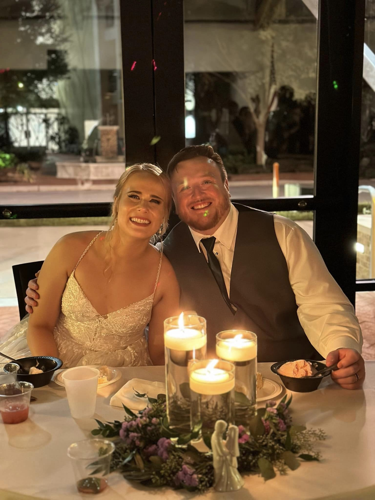

There is beauty in every disaster, if you are clever enough to find it.
-Brandon Sanderson in Elantris
About Me
My name is John Gotheridge. I was born to a fantastic family and raised in a suburb of Chicago. I decided to move out to Orlando to go to the University of Central Florida. I graduated in 2018 with a degree in Interdisciplary Studies. This degree was a way for me to build a degree to any specifications I wanted with 75% of two different majors and a minor. I decided to make my focuses Psychology and Philosophy with a minor in teaching. I did this as a way try to understand how and why people think. I have used my degree to work in a few different special needs schools. During my time in school, I found myself falling into a different career. I found a real passion for technical landscaping on golf courses. There was a simplicity and peace in trying to do simple jobs in perfect order. I also found a true passion in myself for taking something in chaos and finding the order in it. Recently, I wanted a switch in careers. My body was taking a toll from working labor as well as from working in schools. I wanted a job that was more mentally difficult, but less physically demanding. That is when I enrolled in a full stack development bootcamp at the University of Central Florida. Fun life fact, I got married in late 2022. Enjoy a picture from the wedding of my wife and I!
